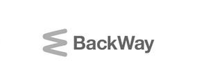
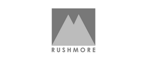
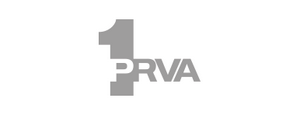
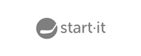

Thursday, 26.09.
-
09:00-10:00
Registration
-
10:00-10:15
opening
-
10:15-11:00
R&D, Innovation, Entrepreneurship, Leonardo de Vinci and the modern economy
Dr. Eli Opper - Ministry of science Israel
-
11:00-11:45
Building what people want
Ryan Fujiu - About.Me
-
11:45-12:30
Escape the black hole
John Biggs - Techcrunch
-
13:15-14:15
Lunch
-
14:15-15:00
Digital Trends
Monty Metzger - Business Angel
-
14:15-15:00
Panel - StartUp community - the driving force
Vukasin Stojkov - Startit.rs, Maxim Gurwits - Eleven, Ivo Spigel - ZIP
-
15:45-16:45
Social media ROI for media websites
Ivor Bihar - iStudio
-
16:45-17:00
Cofee break
17:00-18:30
Startup Competition
20:00
Cocktail
Friday, 27.09.
-
10:15-11:00
Light speed engineering: lessons from building big products fast
Bal Balaji - Bal Lab
-
11:00-11:45
Dropbox: A view from the inside
Chris Varenhorst - Dropbox
-
11:45-12:30
A manifesto for play
Steve Keil - TED speaker
-
12:30-13:15
Skype - the past, the present and the future
Meelik Gornoi - Skype
-
13:15-14:15
Lunch
-
14:15-15:00
The changing nature of 'content'
Rob Hinchliffe - Rushmore.fm
-
15:00-15:45
Panel - The good, the bad and the ugly of starting a StartUP
Nikola Sologub - Homepage.rs, Marcin Zmacinski - Web.me, Danica Radišić
-
15:45-16:45
New business models: mountain or grain of sand
Dragana Djermanovic - PRPepper
-
16:45-17:00
Cofee break
17:00-18:30
Startup Competition/Closing
Requires internet connection
-
Vukasin Stojkov
TruckTrack
An activist, an entrepreneur and a designer. He recently went full-time entrepreneur and co-founded TruckTrack, an un-sexy startup for trucking businesses.
-
Steve Keil
@sgkeil
An entrepreneur whose passion is to create companies in which people are inspired to make their mark with their ideas and imagination.
-
Ryan Fujiu
About.me
Head of Growth at About.me, where he founded the team responsible for new user activation, acquisition, engagement and retention.
-
Rob Hinchcliffe
Rushmore.fm
Rob Hinchcliffe has been building online communities since 2003, when he founded the collaborative blog Londonist, which became one of the most widely read blogs in the country and was voted one of the top 10 most influential blogs in the UK.
-
Nikola Sologub
homepage.rs
Nikola Sologub is a Web addict, digital marketing entrepreneur, managing director at Homepage. With strong background in web development and social media marketing, Nikola brings great user experience into innovative projects.
-
Monty Metzger
@montymetzger
Serial Entrepreneur, Investment Advisor, Business Angel, Passionate Trend Spotter and a Loving Dad & Husband.
-
Meelik Gornoi
Skype
Has been building up Skype desktop and web clients testing teams and now leading a team of 60+ professionals.
-
Maxim Gurvits
Eleven
Chief hustler and resident evangelist at Eleven Startup Accelerator, a EUR 12m acceleration and seed fund based in Sofia.
-
Marcin Zmaczynski
in/mzmaczynski
Marcin Zmaczynski is a true enthusiast of wide IT and new mobile technologies. He really enjoys to be a part of IT branch and gets a lots of satisfaction to make EMEA IT market more friendly for users
-
John Biggs
@JohnBiggs
John Biggs writes about technology, security, gadgets, gear, wristwatches, and the Internet. After spending four years as an IT programmer, he switched gears and became a full-time journalist.
-
Ivor Bihar
iStudio.hr
Ivor Bihar is a product Manager of Mediatoolkit at iSTUDIO – performance marketing agency, Facebook PMD and Google Certified Partner
-
Ivo Špigel
Perpetuum Mobile d.o.o.
Ivo Špigel is an entrepreneur, startup mentor and writer. He is a cofounder and member of the Board of the Croatian IT solutions company Perpetuum Mobile d.o.o.
-
Dragana Djermanovic
PRpepper
An on-line PR practitioner and lecturer and the owner of a consulting agency PRpepper.
-
Dr. Eli Opper
Chief Scientist at Ministry of Industry
Strategic advisor of companies and organizations on policy in the areas of Technology, R&D, Investments Entrepreneurship and Innovation.
-
Danica Radisic
Krazy Fish
Danica Radisic, better known as Niki is an integrated corporate communications consultant and serial entrepreneur
-
Chris Varenhorst
DropBox
Software Engineer at Dropbox. A graduate of MIT with a BA in Computer Engineering and a MA in Engineering & Computer Science, he started working at the San Francisco office four days after handing his thesis in.
-
Bogdan Iordache
How to Web
Co-founder of How to Web Conference, Startup Spotlight program, Tech Hub Bucharest and many more. Trekkie, live music addict, in a quest for knowledge.
-
Bal Balaji
Bal Lab
A former architect and self-taught programmer Balaji Bal's 16 year entrepreneurial career has spanned both start-ups and turn-arounds.
6 Reasons to visit Spark.me
1.
Learn how to blog or improve your blog performance from the world best bloggers
2.
Learn about the future of Social Media
3.
Get motivated to jumpstart your business, online and offline
4.
Learn about successful startups from the region and what they can offer
5.
Spend two days in the best hotel in Montenegro and on the beach
6.
Network and talk to some of the best esteemed experts in the industry during coffee breaks and parties
ME is proud to announce the 10 StartUps that will present at the HOT Spark.ME stage on September 26 & 27 in Budva, and compete for the trip to TCDisrupt NY, 2014.
In addition, each StartUp that made it to this round will have a booth, where they will have a chance to present their product to the conference attendees and distribute promotional material.
Huge congrats to the big ten:
Jellynote
France
DataMaid
Serbia
Cruise.me
UK
Zzzzapp Wireless ltd
Bulgaria
Bark
Serbia
Social Spot
Macedonia
TourVia.me
Montenegro
TruckTrack
Serbia
StreamArena
Serbia
LovelyHeroku
Croatia
Partners:
Production Partners:
- 
- 
Media Partners:
- 
- 